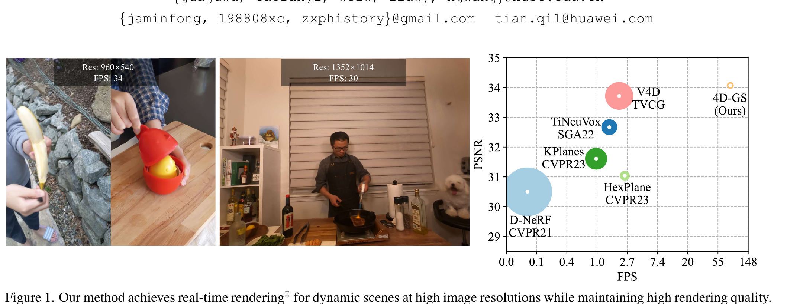
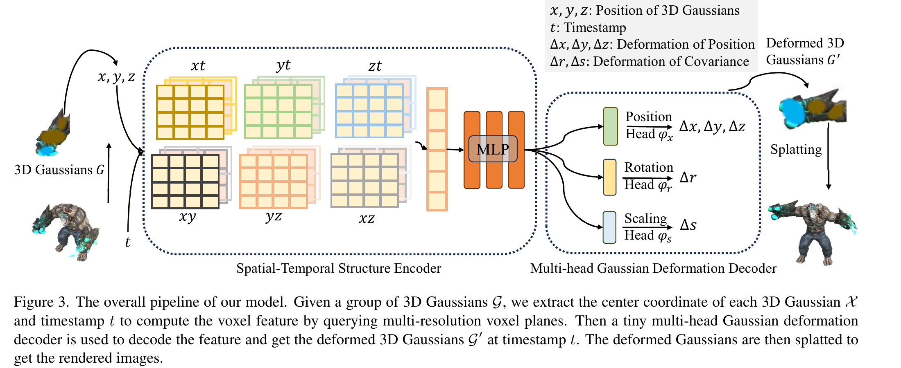

4D Gaussian Splatting for Real-Time Dynamic Scene Rendering
Guanjun Wu, Taoran Yi et al. · HUST / Huawei · CVPR 2024 · arXiv:2310.08528v3 · Zotero S84WJ7EL · PDF E3MCSX5V
4D-GS 解决的是给定已观测动态场景，如何在任意时间和视角高速重建图像。它是动态 neural rendering / scene representation，不是动作条件 world model，也不承诺接触物理或反事实预测。
§1 Introduction：动态场景为什么不能“每个时间点重建一个 3D 世界”
静态 3D Gaussian Splatting 用显式高斯点和可微 rasterization 获得实时新视角渲染，但真实世界会运动、形变和遮挡。最直接的方法是每个时间点维护一套 3DGS，存储与训练成本随帧数增长，也没有显式连接同一物体跨时间的身份；动态 NeRF 的变形场能共享 canonical space，却常受体渲染速度限制。
4D-GS 只维护一套 canonical 3D Gaussians，用时空结构编码器和轻量多头 decoder 预测每个时间的位移、旋转与尺度变化，再直接 splat 变形后的高斯。它把“动态世界”表示成持久空间实体 + 时间条件变形，重点优化照片级 novel-view rendering 和实时速度，而不是动作条件物理预测。
展开原文 · 核心表示
“Only one set of canonical 3D Gaussians is maintained.”
§2 Related Work：动态 NeRF、time-aware field 与显式 Gaussian
动态 NeRF 常把观测点映射到 canonical field，或直接学习 time-aware radiance field；它们表示连续但每个像素需沿射线采样。3DGS 把场景变为显式可光栅化高斯，实时渲染强，却原生假设静态。4D-GS 将 deformation field 作用在 Gaussian 参数上，既共享 canonical entity，又保留 rasterization 吞吐。
这也是它对 world model 的边界：时间 $t$ 是观测索引，不是动作 $a_t$；变形来自拟合已录视频，不保证外力改变后仍正确。后续 SplatSim、GSWorld、GaussGym 会把高斯外观绑定到 physics engine 的刚体/碰撞资产，才形成可交互 Real-to-Sim。
§3 从“每一帧一套 3DGS”变成“一个 canonical 场 + 时间变形”
静态 3DGS 用一组带位置、协方差、颜色和透明度的高斯表示场景。直接给每个时间戳保存一整套高斯，存储随帧数线性增长；4D-GS 只保留一套 canonical 3D Gaussians，再学习一个由 $(x,y,z,t)$ 驱动的 deformation field，把它们在指定时刻移动、旋转和缩放。

§4 表示：六个时空平面 + 小型多头变形解码器

- $G$
- canonical 3D Gaussians，包含位置、旋转、尺度、颜色和透明度。
- $F(G,t)$
- 时空结构 encoder + 多头 MLP，在时刻 $t$ 预测高斯的变形。
- $G'$
- 指定时刻的 deformed Gaussians。
- $S(M,G')$
- 给定相机矩阵 $M$ 做 differentiable splatting，得到图像。
§5 训练目标很“渲染”：图像重建 + 网格平滑
- $\hat I$ 与 $I$
- 当前 4D Gaussian 表示渲染出的图像与真实相机帧；$L_1$ 直接约束颜色和轮廓重建。
- $\mathcal L_{\mathrm{TV}}$
- 对时空形变场施加总变分平滑，抑制相邻位置或时刻出现无依据的剧烈跳变。
- 两项的分工
- 重建项保证“看起来像”，TV 项保证动态变化连续；后者过强会把快速运动抹平，过弱则容易产生抖动和漂浮高斯。
监督来自目标图像和时空网格的 total variation；没有 action、reward、接触状态，也没有 policy loss。它学到的动态可以非常像，但主要是在训练分布内解释已观测运动，而不是对任意机器人干预做因果外推。
§6 证据很强，但指标回答的是 rendering question
| 合成数据 | 800×800、82 FPS，论文表 1 报告 PSNR 34.05、训练约 8 分钟、存储 18 MB（RTX 3090）。 |
| 真实数据 | 1352×1014 可达约 30 FPS；速度仍受分辨率、高斯数量和变形场规模影响。 |
| 复杂度 | 逐帧显式存储约为 $O(tN)$；4D-GS 约为 $O(N+F)$，其中 $F$ 是 deformation field 参数。 |
| 边界 | 论文重点是 novel-view synthesis；复杂拓扑变化、长序列漂移、遮挡后未观测几何与物理干预仍需其他系统解决。 |
§7 我为什么仍然认为 4DGS 对 world model 很重要
它能把真实世界压成高速、可微、时空连续的观测层：适合 real-to-sim 背景、相机重放、视觉域随机化、训练数据渲染和预测结果可视化。机器人 world model 若输出 object-centric state 或未来 mesh，可以再通过 GS renderer 变成像素；反过来，也可从 4DGS 提取 motion prior。但接触、控制与反事实仍要显式 physics、object state 或 action-conditioned latent dynamics 补上。
| 短期最有价值 | SimFoundry / SplatSim / GaussGym 这类“GS renderer + physics simulator”的混合栈。 |
| 中期研究点 | object-aware dynamic splats、可编辑 articulation、GS↔mesh 双向绑定、uncertainty-aware reconstruction。 |
| 不建议的叙事 | “渲染能预测下一帧，所以 4DGS 就是 world model”——它没有动作干预和任务相关的因果状态。 |
4DGS 值得学，尤其如果你的 world model 要落到 real-to-sim、仿真评测或高带宽视觉预测；但研究优先级应排在 action-conditioned dynamics、object/scene state、physics grounding 之后。它更像世界模型的“显卡友好型眼睛”，不是大脑本身。
§8 实验归因与复现：渲染指标不能替代交互证据
最小可信复现清单
- 公开相机轨迹、时间同步、初始化点云和 train/test 视角划分。
- 报告 Gaussian 数、densification/pruning、六平面尺度和 decoder 配置。
- 把训练时间、渲染 FPS 与峰值显存绑定到分辨率和硬件。
- 按刚体运动、非刚体形变、遮挡和拓扑变化分场景评估。
- 若用于 simulator，必须另建几何/碰撞/物理资产并做策略闭环测试。
它对 world model 很重要，因为提供高速、持久、可编辑的 4D视觉载体；但它本身是重建/渲染表示，不是因果动力学模型。